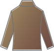
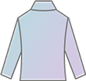
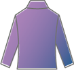

SEASONS
シーズンズ
SEASONSは、
自身のパーソナルカラーを見つける新感覚の
体感型カラー診断です。
カラー診断をもとにした、お客様に似合う
コスメとの出会いの場を提供します。
ご回答後は、
FlowerHouse へ
足をお運びください
Q6
瞳の形は?
6/11
大きくてパッチリ
可愛らしい感じ

白目と黒目の
コントラストが強い
知的な感じ
白目と黒目の
コントラストが弱い
穏やかな感じ
丸くて黒目がち
優しい感じ
Q9
周りからの第一印象は?
9/11

深くてコッテリした
アースカラー
温かみのある
ビタミンカラー

明るめでソフト
パステルカラー

明るめで鮮やか
ビビットカラー
このQRコードは、@cosmeTOKYO内にある
FlowerHouseのブース上で使用いたします。
バーコードリーダーにスキャンすることで、
お客のパーソナルカラーを空間上で診断する
サービスとなります。
この画面をスクリーンショットして、保存してください。
※このQRコードは映像体験で取得できる診断結果情報を反映しています。ご確認ください。